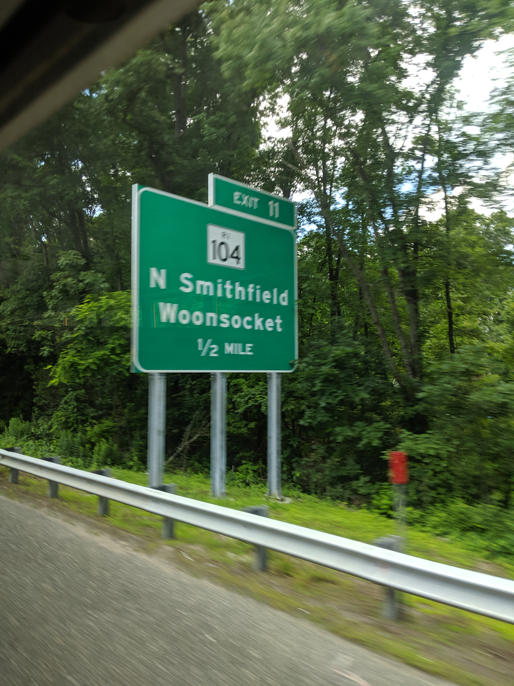
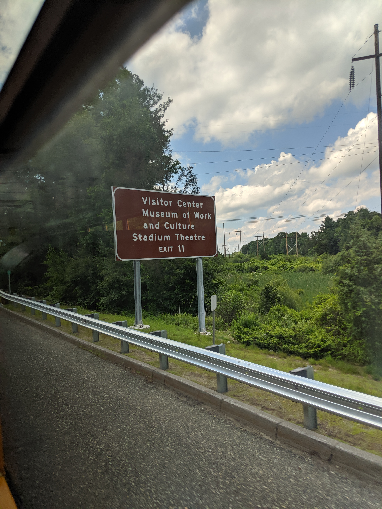
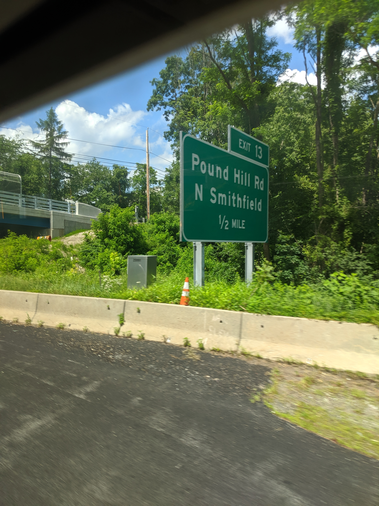
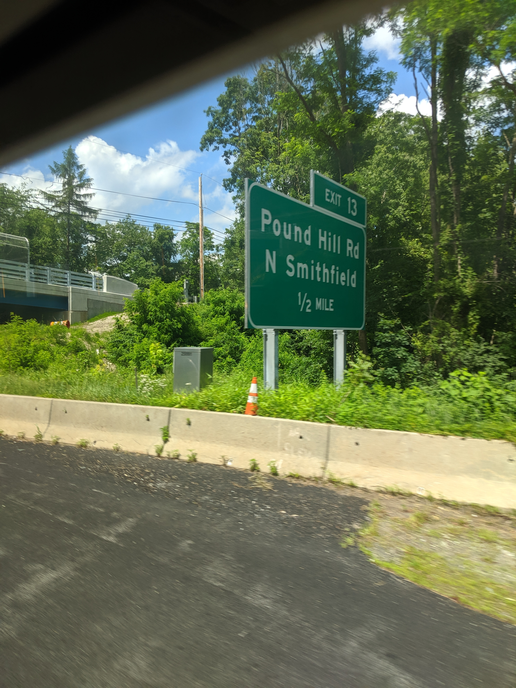
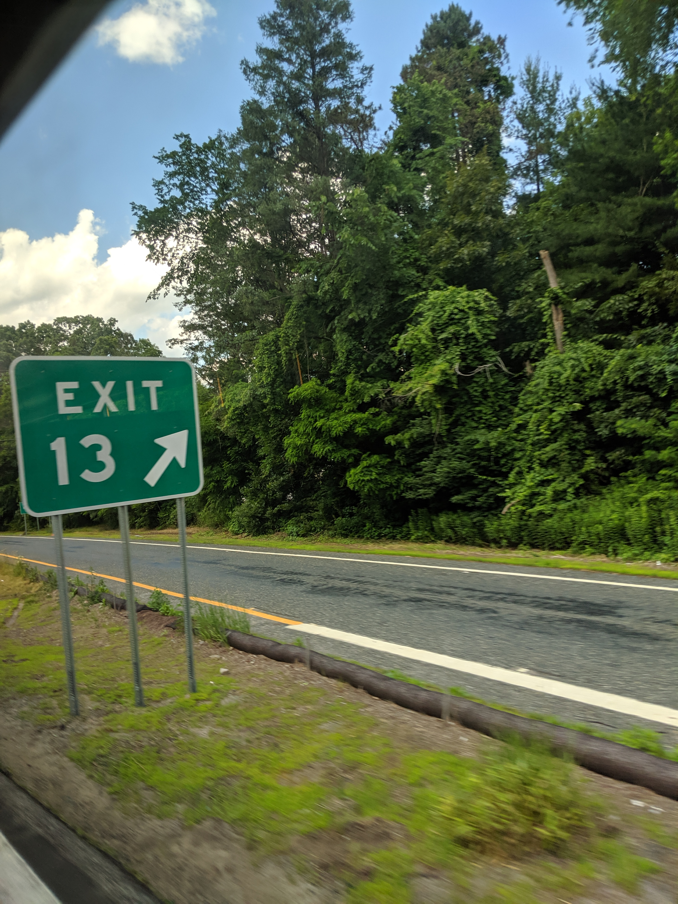
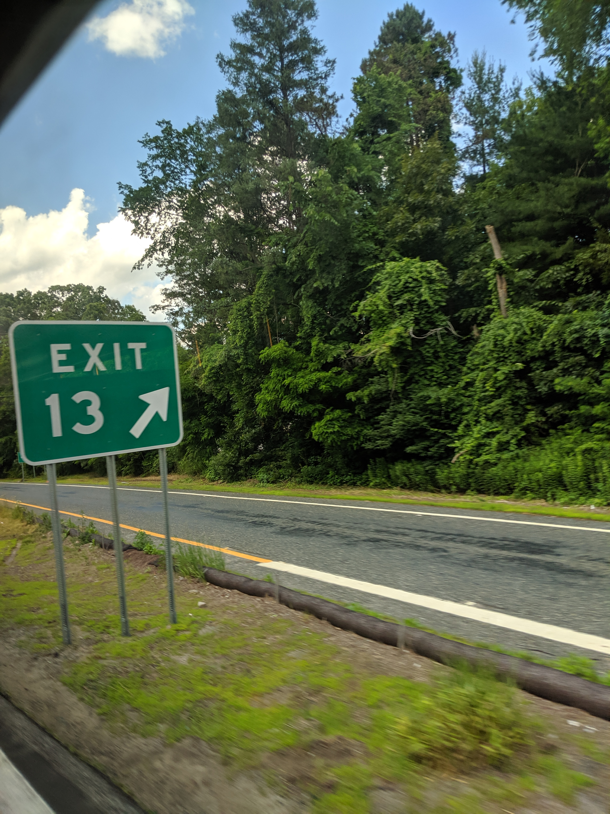

These are currently the oldest photos on my website, dating back to 26 June 2019. They were also taken with my phone.

The gore sign for exit 10, RI 146A.
 
Signage for exit 11, RI 104. The text on the brown sign in the second photo is a bit off.
 

 

Signage for exit 13, Pound Hill Road. "Distr" is an odd one for "distribution". 1/2 mile advance sign is not the best photo.

The gore sign for exit 14, RI 146A. Prior to the 2019 sign replacement, this exit was signed for RI 5 and 102. Yep, mileage based exit numbers.
| Milepost | Exit # | Road Name | Destinations |
|---|---|---|---|
| 0.30 | 1A | RI 246 Admiral Street | |
| 1.40 | 1 (NB) 1B (SB) | Branch Avenue | |
| 2.50 | 2 | RI 15 | North Providence Pawtucket |
| 4.00 | 4A | RI 246 | |
| 4.50 | 4 (NB) 4B (SB) | Twin River Road | |
| 5.00 | 5 | RI 123 | |
| 6.40 | 6 | RI 246 Sherman Avenue | |
| 7.32 | 7A | RI 116 north | Lincoln |
| 7.65 | 7B | RI 116 south | Smithfield |
| 8.28 | 8A | I-295 north | Boston, MA |
| 8.62 | 8B | I-295 south | Warwick |
| 8.80 | 8C | RI 99 north | Cumberland Woonsocket |
| 9.00 | 9 | Reservoir Road | |
| 10.60 | 10 | RI 146A north | Park Square Woonsocket |
| 12.10 | 11 | RI 104 | North Smithfield Woonsocket |
| 13.40 | 13 | Pound Hill Road | North Smithfield |
| 14.30 | 14 | RI 146A | Burrillville North Smithfield |